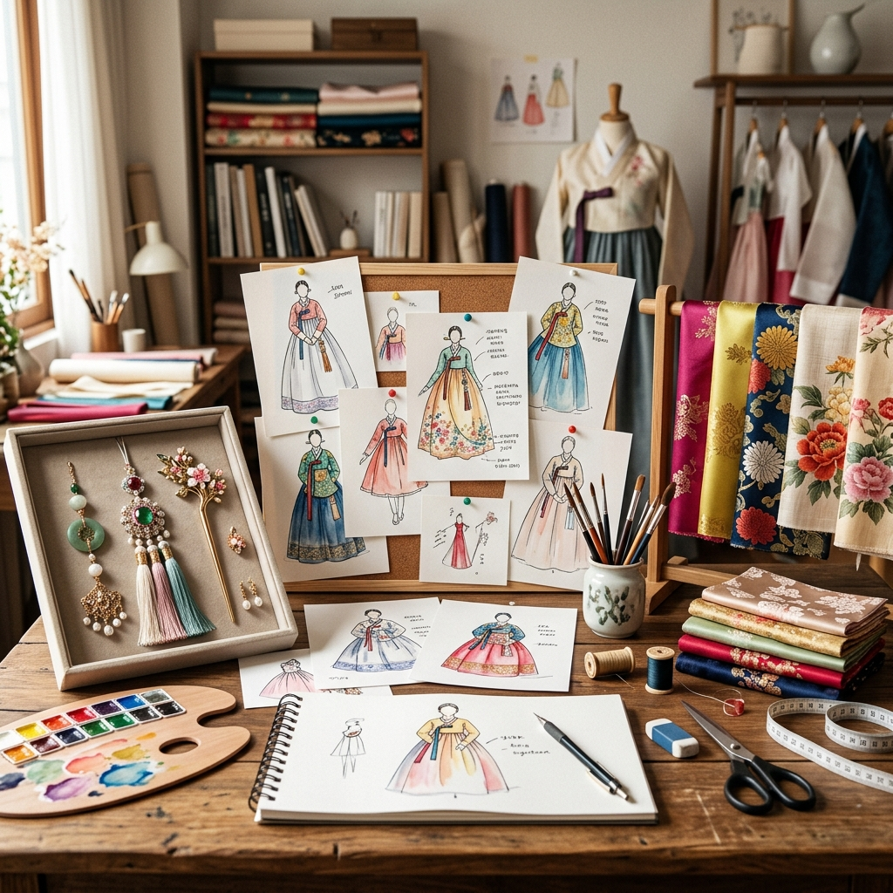
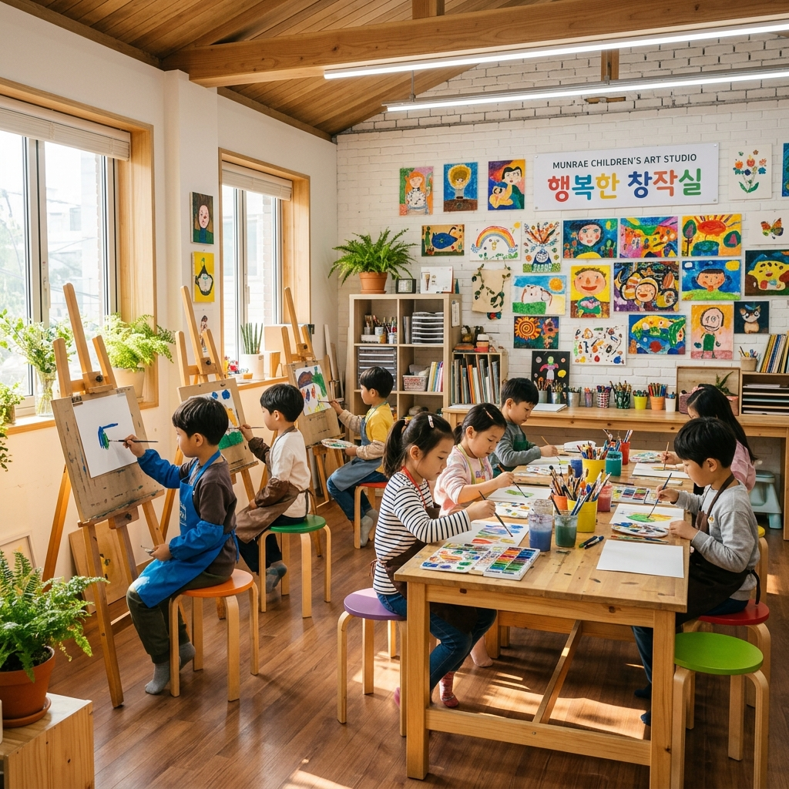

🎓 이화여자대학교 미술 전공
👔 세계적 한복 브랜드 [메종 드 이영희] 디자이너 출신
💎 스타(문근영, 수애 등) 주얼리 및 액세서리 스타일링 디렉터
📺 tvN 드라마 <마우스> 촬영 및 다큐멘터리 미술 자문 화실
📰 더모스트타임즈 & 시선뉴스 미술교육 명인 선정 인터뷰
👑
중등정교사
🎓
이화여대
👔
디자이너
📺
드라마 촬영
📰
인터뷰
👑 강조
❤️ 1,024💬 86
❤️ 942💬 48

❤️ 1,180💬 72
❤️ 890💬 39

❤️ 1,320💬 114
❤️ 956💬 52
🎥 릴스 준비 중입니다. 인스타그램에서 최신 숏폼 영상을 확인하세요!
👤 태그된 게시물이 없습니다.